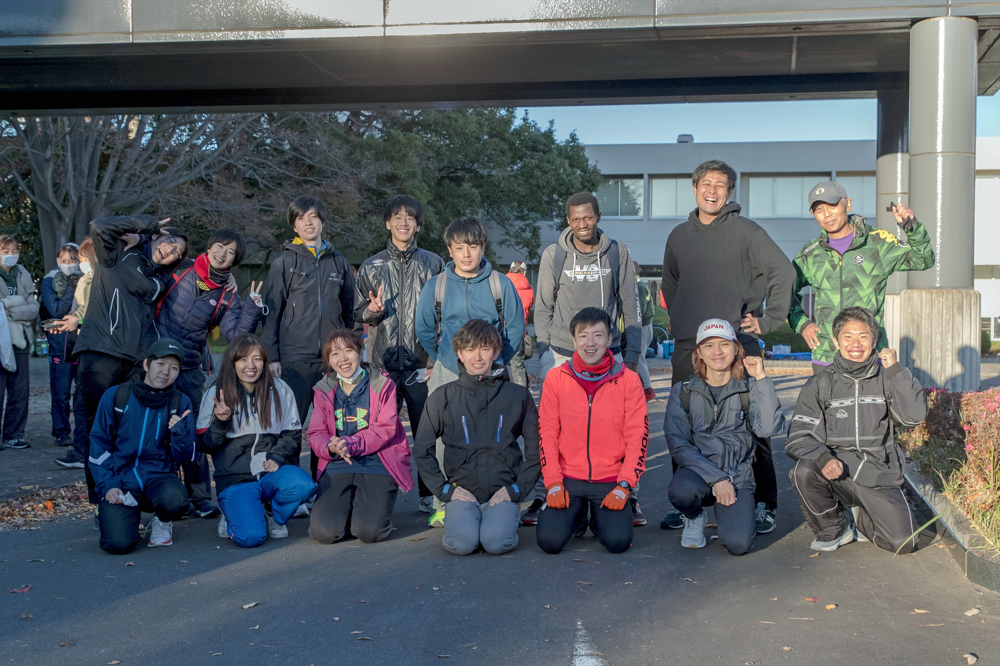

I am currently a doctoral student focusing on the concept of (V.B.I.S.I)Vehicle-Bridge Interaction Sytem Identification a drive-by bridge monitoring scheme, a Master and Bachelor of Science degree holder in civil engineering with specialization in structural engineering. I am looking to use my higly sophisticated mathematical knowledge, problem-solving skills, programming language skills and so many other of my soft skills to help your company to stay top ahead of competitors as structural health monitoring engineer in a civil engineering construction and consultant firm. I addition I think that my website development skills (front-end developer) can be usifull to the company. So why not try me!, I am sure I've got what you need.
My hobby

Tsukuba Marathon
Participating in tsukuba marathon was both a challenge and an opportunity to test my endurance. This event was full of joy, I can remember how it felt running with my teamate whom we shared the same goal. It was a precious experience that I never had before.

Mount Fuji Climbing
Climbing mount Fuji with my good friends Mr Vithor and Miss Veronica was a memorable moment. Except the challenge of Taiphoon that night, the whole experience was remarkable. I can remember when the sun rose in the morning, I can feel the joy we hard when taking those beautiful pictures that it was my first time to see such scenery.